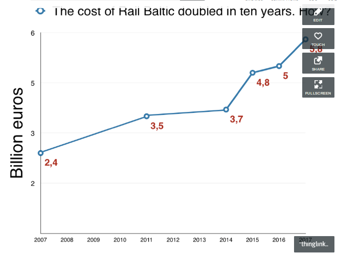
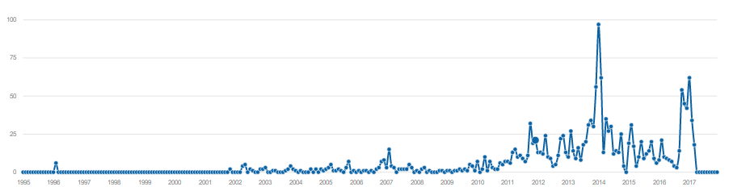

Timelines
The goal of the project is to look at the timelines of development of the project Rail Baltic.
This page hosts the analysis compiled on the media representation of Rail Baltic. The page was initiated on the Post-Truth Hackathon in Tartu, April 2017. The contents of the page are work in progress!
EstEngThe goal of the project is to look at the timelines of development of the project Rail Baltic.
Initiated by EU and Estonia, politics are of course involved in making it happen.

As for most mega-projects, the projections for costs and economic benefits may vary.

For more than 10 years, the public have followed and contributed to discussions on the project in the media. What were the topics? How did the discussion continue?
The projected costs of the project have almost doubled during the 10 years.

The number of articles in one of the publications in the media - discussions really took off only late 2011. Work on this continues.
We're continuing the project in analysing the representations of Rail Baltic in the media - stay tuned!